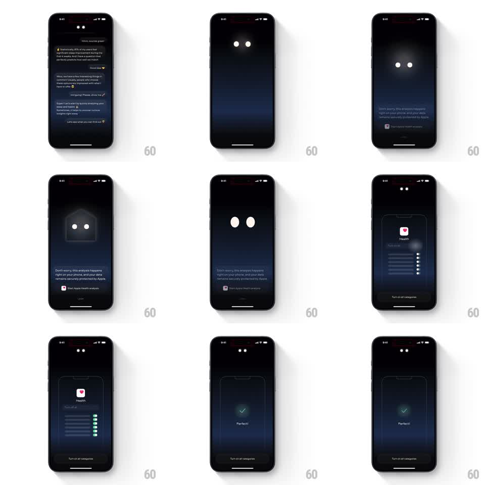

Media
Frame-by-frame

Rebuild this animation 1:1: Remy AI's Health permission flow - the mascot eyes fold into a shield, then an Apple Health sheet slides up and its category toggles flip on one by one before a "Perfect!" confirmation.

Rebuild this animation 1:1: Remy AI's Health permission flow - the mascot eyes fold into a shield, then an Apple Health sheet slides up and its category toggles flip on one by one before a "Perfect!" confirmation.
## Integration
Integration: stack-agnostic spec - springs given as stiffness/damping, timed motions as duration + curve; map every value to your framework and animation library of choice.
## Scene
A dark onboarding beat: reassurance copy ("Don't worry, this analysis happens right on your phone...") with a "Start Apple Health analysis" button. The mascot's glowing eyes morph into a shield outline. An Apple Health permission sheet rises with the Health icon, a list of data categories with toggles, and a "Turn on all categories" button, ending on a glowing checkmark and "Perfect!".
## Motion spec
Pattern: mascot morph to permission sheet with staggered toggles, ~3s.
- The eyes pull together and unfold into a shield outline around themselves (600ms, ease-in-out), the reassurance copy fading in below.
- On continue, the Health sheet slides up from the bottom (spring stiffness 280 damping 24), dimming the content behind.
- The category rows stagger in (80ms apart, 250ms fade-rise), then their toggles flip on in sequence top to bottom (200ms per toggle, 120ms stagger), each snapping green with a small overshoot.
- When all toggles are on, the sheet content crossfades to a centered glowing checkmark that pops (scale 0.5 to 1, stiffness 380 damping 15) with "Perfect!" fading up beneath (300ms).
## Calibration
- Toggles flip after the rows have settled - sheet first, then the cascade.
- The checkmark glow is teal-green, matching the toggles.
## Reduced motion
Sheet fades in with toggles already on; confirmation fades.
## Don't miss
- The shield keeps the two eyes visible inside it - the mascot becomes the privacy mark.
- "Turn on all categories" stays pinned at the sheet's bottom.